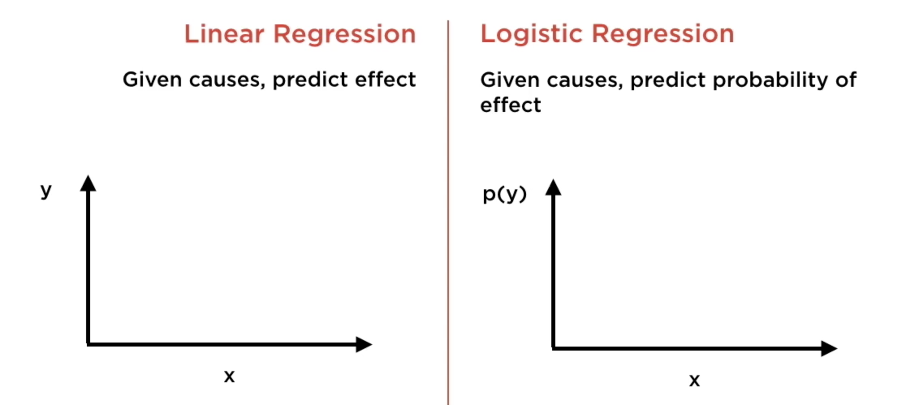
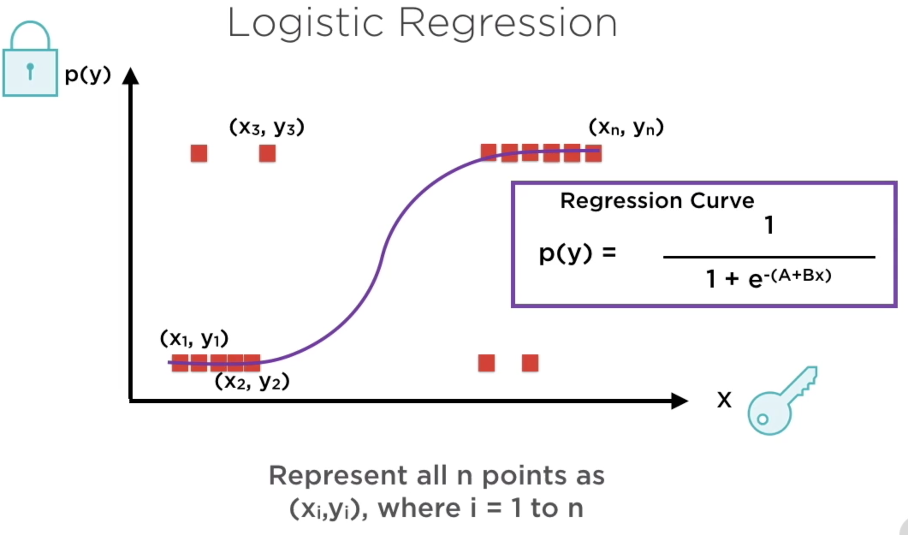

Regresión logística
Contents
Regresión logística¶
Es un algoritmo para obtener un clasificador binario.
La regresión logística es bastante efectiva en situaciones en las que la relación entre la probabilidad de lograr una meta/objetivo (Y) está vinculada a los recursos necesarios (X) de manera no lineal donde una disminución/aumento de cierto recurso más allá de cierto umbral disminuye/aumenta drásticamente la probabilidad de lograr el objetivo.
 {kind=link}
{kind=link}
Los clasificadores binaros basados en regresión logística clasifican las observaciones de acuerdo a un umbral típicamente 0.5 (50%).
Hay dos técnicas comunmente empleadas para obtener los coeficientes de regresión. MLE y mínimos cuadrados (luego de convertir la relación establecida por la curva “S” a una relación lineal)
Scikit Learn - Regresión logística
import pandas as pd
import numpy as np
import os
df_entrenamiento = pd.read_csv(os.path.join("csv", "train.csv"), index_col='PassengerId')
df_entrenamiento.head()
| Survived | Pclass | Name | Sex | Age | SibSp | Parch | Ticket | Fare | Cabin | Embarked | |
|---|---|---|---|---|---|---|---|---|---|---|---|
| PassengerId | |||||||||||
| 1 | 0 | 3 | Braund, Mr. Owen Harris | male | 22.0 | 1 | 0 | A/5 21171 | 7.2500 | NaN | S |
| 2 | 1 | 1 | Cumings, Mrs. John Bradley (Florence Briggs Th... | female | 38.0 | 1 | 0 | PC 17599 | 71.2833 | C85 | C |
| 3 | 1 | 3 | Heikkinen, Miss. Laina | female | 26.0 | 0 | 0 | STON/O2. 3101282 | 7.9250 | NaN | S |
| 4 | 1 | 1 | Futrelle, Mrs. Jacques Heath (Lily May Peel) | female | 35.0 | 1 | 0 | 113803 | 53.1000 | C123 | S |
| 5 | 0 | 3 | Allen, Mr. William Henry | male | 35.0 | 0 | 0 | 373450 | 8.0500 | NaN | S |
Hacemos limpieza de las columnas que no son necesarias para este ejercicio.
df_entrenamiento = df_entrenamiento.drop(['Ticket', 'Embarked', 'Cabin'], axis=1)
df_entrenamiento = df_entrenamiento.dropna()
X = df_entrenamiento.loc[:,'Age':].to_numpy().astype('float')
y = df_entrenamiento['Survived'].ravel()
from sklearn.model_selection import train_test_split
X_train, X_test, y_train, y_test = train_test_split(X, y, test_size=0.2, random_state=0)
print(X_train.shape, y_train.shape)
print(X_test.shape, y_test.shape)
---------------------------------------------------------------------------
ModuleNotFoundError Traceback (most recent call last)
Input In [6], in <module>
----> 1 from sklearn.model_selection import train_test_split
3 X_train, X_test, y_train, y_test = train_test_split(X, y, test_size=0.2, random_state=0)
4 print(X_train.shape, y_train.shape)
ModuleNotFoundError: No module named 'sklearn'
from sklearn.linear_model import LogisticRegression
# crear el clasificador
clasificador_reg_log = LogisticRegression(random_state=0, solver='liblinear')
# entrenar el clasificador
clasificador_reg_log.fit(X_train,y_train)
LogisticRegression(random_state=0, solver='liblinear')
print('accuracy del clasificador - version 1 : {0:.2f}'.format(clasificador_reg_log.score(X_test, y_test)))
accuracy del clasificador - version 1 : 0.64
El hiperparámetro ‘penalty’¶
L1 and L2 Regularization Methods
#evaluar el desempeño
from sklearn.metrics import accuracy_score, confusion_matrix, precision_score, recall_score, f1_score
# accuracy
print('accuracy del clasificador - version 1 : {0:.2f}'.format(accuracy_score(y_test, clasificador_reg_log.predict(X_test))))
# confusion matrix
print('matriz de confusión del clasificador - version 1: \n {0}'.format(confusion_matrix(y_test, clasificador_reg_log.predict(X_test))))
# precision
print('precision del clasificador - version 1 : {0:.2f}'.format(precision_score(y_test, clasificador_reg_log.predict(X_test))))
# recall
print('recall del clasificador - version 1 : {0:.2f}'.format(recall_score(y_test, clasificador_reg_log.predict(X_test))))
# f1
print('f1 del clasificador - version 1 : {0:.2f}'.format(f1_score(y_test, clasificador_reg_log.predict(X_test))))
accuracy del clasificador - version 1 : 0.64
matriz de confusión del clasificador - version 1:
[[69 10]
[41 23]]
precision del clasificador - version 1 : 0.70
recall del clasificador - version 1 : 0.36
f1 del clasificador - version 1 : 0.47
# coeficientes del modelo
clasificador_reg_log.coef_
array([[-0.02455679, -0.3946987 , 0.1850001 , 0.02286013]])
df_entrenamiento.loc[:,'Age':].columns
Index(['Age', 'SibSp', 'Parch', 'Fare'], dtype='object')
list(zip(df_entrenamiento.loc[:,'Age':].columns, clasificador_reg_log.coef_[0]))
[('Age', -0.024556791350753466),
('SibSp', -0.3946987047411627),
('Parch', 0.1850001010903358),
('Fare', 0.02286012707033761)]